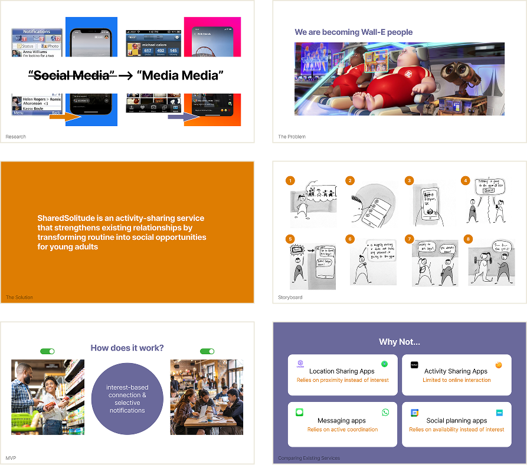
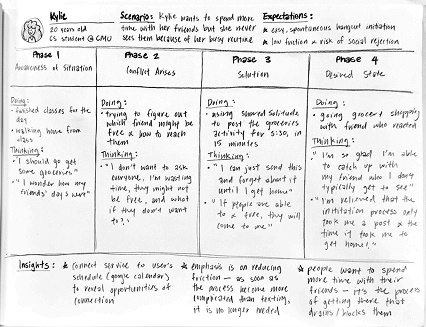
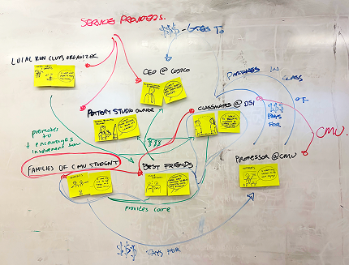
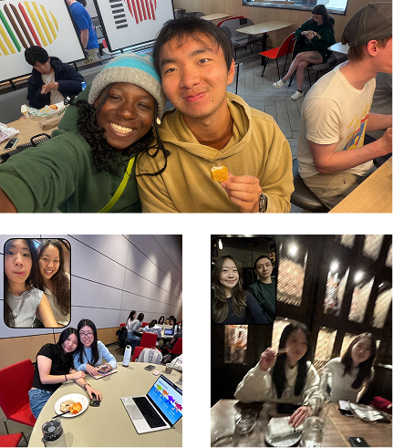
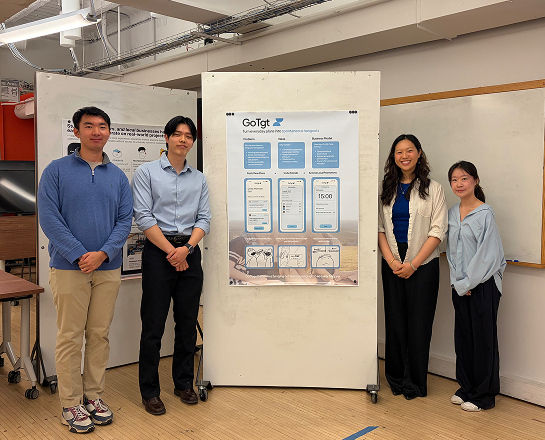
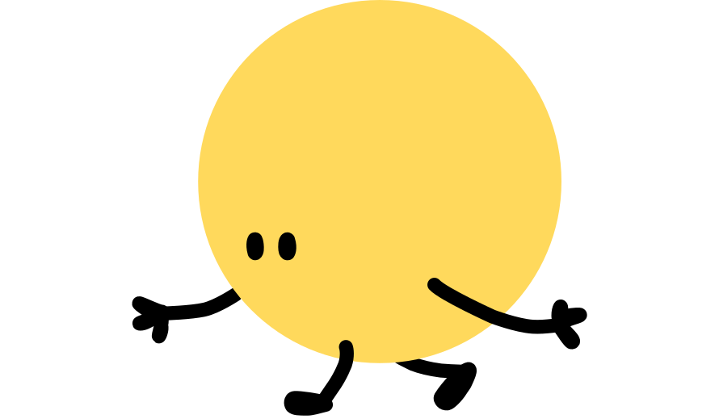
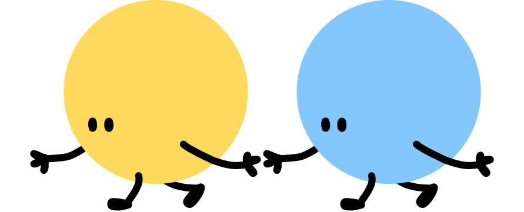
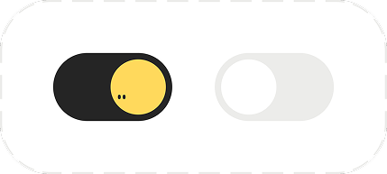
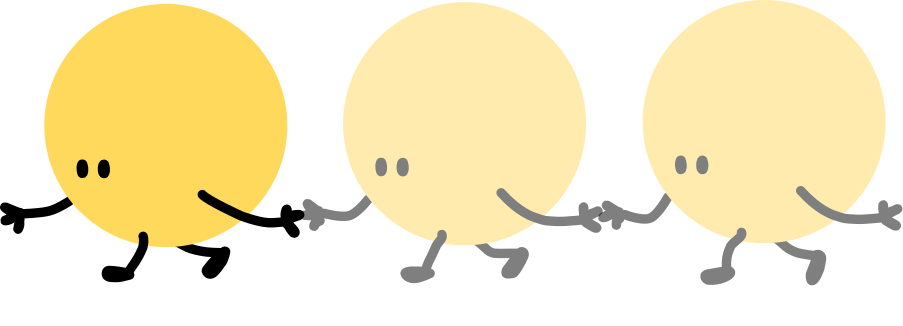

GoTgt
Designing spontaneous connection within busy routines
Lead Designer
Jan-May 2026
Prototype LinkOverview
A social app that makes it so easy to see your friends that it is a net positive to initiate, even when you’re busy
3-Step post of an activity that was already part of your day
Friends in that activity circle get notified & can choose to ignore or join in
See all the active events before the time runs out & choose if you want to join
Context & Constraints
Semester-long competition in a digital service innovation class

Generate a product idea & compete with ~20 other students
Winning 4 ideas move to 2nd round with a team of 4
Team must prove the business & user value through a MVP test
Final deliverable is a presentation pitch to investors
Concept
How do I create a winning product?

Real & relevant problem that I believe in
Really busy & stressed during this time
Hanging out with friends makes it better
Coordinating schedules is stressful
Busy & stressed & lonely
A product that would make it so easy to hang out that it is a net positive even when busy

1st Pitch
Introducing... Shared Solitude

Class vote... Tied for 1st!
MVP Testing
Validating the value of reducing barriers to shared routine activities
Mapping out user journey

Finding key stakeholders

Selected quote from over 20 interviews
"I actually would want to add more socialization into my routine, but I don't because I don't know if it will end up being a waste of time"
CMU student, 20 y/o
Minimum Viable Product

Testing the MVP to see if friends who have busy schedules would actually respond to a spontaneous system of doing mundane activities together
Found that almost every single 1-1 invitation of ~20 happened!
2nd Pitch
We gathered our findings & pitched GoTgt to investors

Day of the presentation, we pitched with a prepared poster, slide deck, & matching fits...
And we did not win, but tied for second place!
The course was now over, but I was still hungry...
We never got to work on the design aspect, what if I designed it on my own?
Solo Designing
Started with the framework we already had

I took notice something in the way the words fit together in GoTgt & an idea was born...


Character Design
“lil guys” as the mascot for a spontaneous social app
The circles from GoTgt inspired life into the “lil guys”

The lil guys could hold hands & GoTgt!

Design System
Creating the brand around the character
I had to go with a playful typeface to match the concept of the app & the energy of the lil guys
Not to mention also a geometric typeface that would serve the circles nicely...
Nexa Book
GoTgt
And the rest of the design system followed pretty easily once the wordmark and mascot were down
Display XL
ramen?
Display L
ready to Tgt?
Title
Costco run
Heading
out right now
Body L
She's going either way.
Body
Tsukiya, 6 min walk
Body strong
14 min
Caption
posted 4 min ago
Label
out right now
ink #252525
muted #6E6E6E
line #ECECEA
mist #F7F7F5
yellow #FFD95C
blue #83C7FF
pink #FF83E6
green #43F697
Which made it really exciting to jump into establishing components


Anytime there is a circle, there is opportunity to make it a lil guy with 2 simple dots
Motion & Animation
Bringing life to the lil guys & interactions through motion
From the birth of the lil guys, I had always seen them very clearly walking
It could be used for loading states, splash screen, wordmark motion... endless possibilities!
Drawing out individual frames to show to Claude

Which initially did not work super well...

But then I iterated through it, working between Claude & Figma Motion!

This also meant I could bring the workmark motion vision to life!
Reflections
Just how far can someone take an idea they’re passionate about?
GoTgt was created for the purpose of winning, yet that ended up catapulting a journey in product thinking & design that I have never been so invested in. Finding a real problem space that I genuinely cared about in the beginning made every step of this process not just more intentional, but easy.
To be very honest, a lot of the courses at CMU within HCI are not very design focused, and I was once again disappointed when there was no opportunity to learn how to “properly” do the product designing.
However, this project showed me that I am more than capable of applying my skills across disciplines as long as I actually sit down to do it. The entire design section of the project was done on my own, and it was probably the first time I felt actually connected to a product design work.
And I am not yet done.
From here, I have been thinking about taking it another step further to fully develop this app with the help of a engineering friend. I’m all about asking the “whys” and “why nots” and if this is genuinely a product that I believe in, which it has since the beginning, why shouldn’t it be a real solution that touches people’s lives?